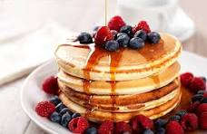

Pancake easy
HOME

Pancakes are soft, fluffy, and golden-brown breakfast classics made from a simple batter of flour, milk, eggs, and baking powder. Lightly sweetened and cooked to perfection on a griddle or pan, they pair beautifully with syrup, butter, fresh fruits, or even chocolate chips. Easy to prepare and endlessly customizable, pancakes are a comforting and versatile dish enjoyed by all ages, making them a staple in breakfast menus around the world.
- 1 cup all-purpose flour
- 1 tablespoon sugar
- 1 teaspoon baking powder
- 1/2 teaspoon baking soda
- 1/4 teaspoon salt
- 3/4 cup milk
- 1 large egg
- 1 tablespoon melted butter
- 1 teaspoon vanilla extract
Now for the steps:
- In a bowl, whisk together flour, sugar, baking powder, baking soda, and salt.
- In another bowl, whisk milk, egg, melted butter, and vanilla extract.
- Pour wet ingredients into dry ingredients and mix until combined.
- Heat a non-stick pan over medium heat and lightly grease with butter.
- Pour 1/4 cup of batter onto the pan and cook until bubbles form.
- Flip and cook for another minute until golden brown.
- Repeat with remaining batter and serve with syrup or fruits.